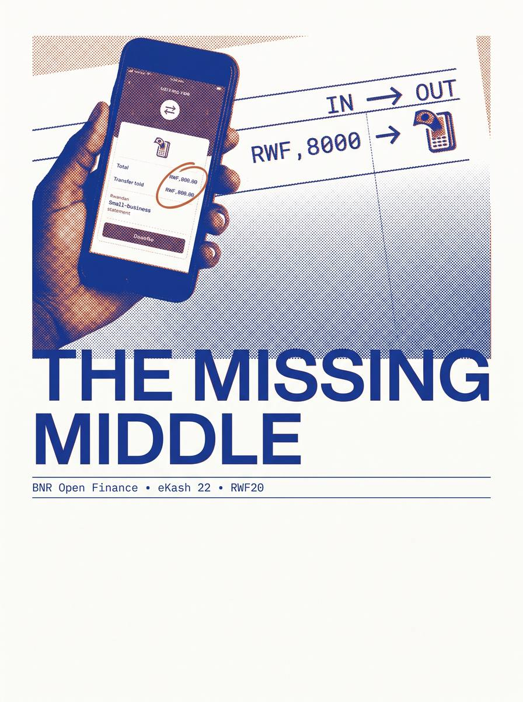

Rwanda's creditworthy small businesses can't borrow. The data to lend safely already exists. The bridge between them is empty — these five artifacts are the bridge, specified end to end.

Credit dead zone, overlooked MoMo asset, the two rails, why now. 8 pages.
Open PDF →Full architecture (consent → signals → decision → loans → eKash) + MVP slice. API-only. 8 pages.
Open PDF →Hand-drawn system panorama companion to the PRD. 8 pages.
Open PDF →Live request queue, cash-flow review, editable terms, decide, disburse over eKash.
Open demo →Seven diagrams: system, decision engine, swimlane, flywheel, journey, data, why now.
Open story →